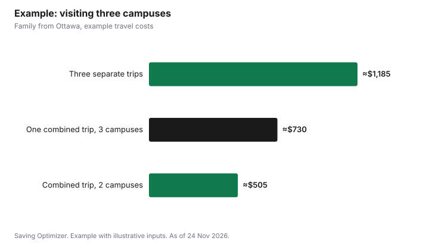

Education · Canada
Campus Tours and Open Houses: Keeping the Cost Down

Campus tours can cost a family hundreds of dollars once you add gas, hotels and meals, especially for schools in another province. You can keep the cost down by starting with free virtual tours, going to the free Ontario Universities' Fair to meet many schools in one place, and saving in-person visits for the two or three campuses at the top of your list. Combining nearby campuses into one trip and visiting after offers arrive both cut costs.
Key takeaways
- Virtual tours and online info sessions are free and good enough for a first cut.
- The Ontario Universities' Fair was free on 26 and 27 Sep 2026 at the Metro Toronto Convention Centre, South Building, 9:30 a.m. to 5 p.m.
- Open houses happen in fall and spring. Spring open houses for admitted students help you choose between offers.
- Group nearby campuses into one trip, such as Waterloo and Laurier, or Toronto-area schools.
- Example: three separate overnight trips cost about $1,185; one combined trip costs about $505.
Virtual tours
Almost every Canadian university offers a free virtual tour, recorded or live information sessions, and student-run Q&A sessions. Use these to drop schools whose programs, location or size don't fit. A student who narrows a list from eight to three before travelling can save several trips. Watch the residence and program sessions, not just the campus tour.
Open house dates
The Ontario Universities' Fair (OUF) brings Ontario's universities together in one place each fall. In 2026 it ran on Saturday 26 and Sunday 27 September at the Metro Toronto Convention Centre, South Building, from 9:30 a.m. to 5 p.m. each day, and admission was free. Universities also hold their own fall open houses, usually from October to November, and spring open houses for admitted students, often in March and April. Dates for 2027 will appear on each school's admissions site and on ouevents.ca.
Travel planning
- Group campuses close to each other into one trip.
- Drive or take the bus or train with the whole family on one ticket deal where available. GO Transit has promoted its weekend passes for the OUF.
- Stay with family or friends, or book a hotel outside the university town on open house weekends, when prices rise.
- Pack lunch, and eat in the campus cafeteria for one meal to see what students eat.
- For out-of-province schools, wait until you have an offer. Some universities run free or discounted visit programs for admitted students; ask.
| Option | Typical cost | Best for |
|---|---|---|
| Virtual tour and info session | Free | First cut of the list |
| Ontario Universities' Fair | Free entry; transit to Toronto | Meeting many Ontario schools at once |
| Day trip to a nearby campus | Gas or transit, lunch | Top choices within driving distance |
| Combined overnight trip | One hotel night, gas, meals | Two or three campuses in one area |
| Out-of-province visit | Flights or long drive, hotel | Only after an offer, if needed |
What to ask
- What will first-year residence and a meal plan cost? See meal plan costs.
- What entrance scholarships are automatic, and what needs a separate application?
- Do most students live on campus after first year, and what does nearby rent cost?
- What are typical textbook and lab costs for this program?
- Is co-op available, and what does it cost and pay?
Budget: an example
An example family from Ottawa wants to see three campuses in southwestern Ontario.

Three separate trips, each with one hotel night at an example $220, $95 of gas and $80 for meals, cost about $1,185. One combined trip with two hotel nights ($440), $150 of gas and $140 for meals costs about $730. If a virtual tour rules out one school, a two-campus trip with one night, $145 of gas and $140 for meals costs about $505. The money saved can go toward application fees; see our OUAC guide.
Sources
- Ontario's Universities, Ontario universities come together for Canada's largest university fair, 23 Sep 2026 (OUF 26–27 September 2026), checked 24 Nov 2026.
- OUAC Guidance, Help Us Promote OUEvents (OUF 26–27 September 2026, 9:30 a.m. to 5 p.m., Metro Toronto Convention Centre South Building), checked 24 Nov 2026.
- GO Transit, Take GO to Ontario Universities' Fair (OUF), published 22 Sep 2026, checked 24 Nov 2026.
Frequently asked questions
Is the Ontario Universities' Fair free?
Yes. Admission to the Ontario Universities' Fair is free. In 2026 it ran on 26 and 27 September at the Metro Toronto Convention Centre in Toronto.
Are virtual campus tours worth it?
Yes, for a first cut. They're free and help you drop schools that don't fit before you spend on travel.
When are university open houses in Canada?
Fall open houses usually run from October to November, and spring open houses for admitted students are often in March and April. Check each school's admissions site.
Should I visit universities before or after applying?
Visit nearby top choices before applying if you can, and save expensive out-of-province trips until after you have an offer.
How can I save on campus visits?
Narrow the list with virtual tours, combine nearby campuses into one trip, avoid hotel nights in the university town on open house weekends, and pack food.
Researched and drafted with AI assistance and fact-checked against official Canadian sources. How we create content.
Note: Dates and visit programs change. Confirm with each university's admissions office. Education only.